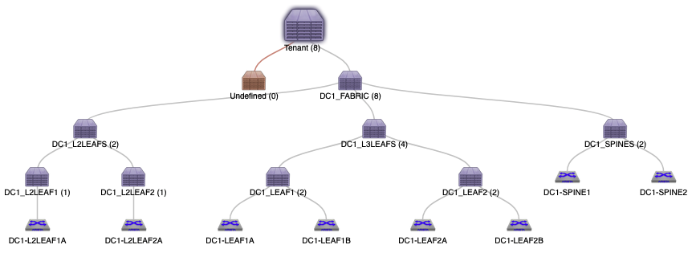

Build your first AVD & CVP project
How to build your first project with AVD and CVP¶
This document explains how to customize demo information and how to setup an environment. A complete git repository is available and can be used as a support to this how-to document.
Demo repository: arista-netdevops-community/ansible-avd-cloudvision-demo
Installation Process¶
Demonstration requirements¶
Components¶
- A CloudVision Portal instance running a minimum version
2018.2.5or CloudVision as a Service (CVaaS) - A network topology:
- Demo is based on a 2 spines / 4 leafs running on GNS3 but should also be configured on EVE-NG platform.
- Any physical or virtual topology with oob connected to CVP should work.
- A python environment with CloudVision access.

IP Address management¶
- CloudVision IP address:
- Cluster interface: eth0 / Should use your own IP address
- Device interface: eth1 /
10.255.0.1/24
- Management Network:
10.255.0.0/24- DC1-SPINE1:
10.255.0.11/24 - DC1-SPINE2:
10.255.0.12/24 - DC1-LEAF1A:
10.255.0.13/24 - DC1-LEAF1B:
10.255.0.14/24 - DC1-LEAF2A:
10.255.0.15/24 - DC1-LEAF2B:
10.255.0.16/24 - DC1-L2LEAF1A:
10.255.0.17/24 - DC1-L2LEAF2B:
10.255.0.18/24
- DC1-SPINE1:
- Default Username & Password:
- admin / arista123
- cvpdamin / arista123
- ansible / ansible
- Servers configuration:
- Server 01: eth0 /
10.1.10.11/24 - Server 02: eth0 /
10.1.10.12/24
- Server 01: eth0 /
This management IP addresses are used in a private virtual-network between CloudVision and Arista EOS devices.
Configure Python environment¶
Please refer to installation page to install AVD and CVP collections.
Configure DHCP server on CloudVision¶
In this scenario, we use CloudVision (CV) as ZTP server to provision devices and register them onto CV.
Once you get mac-address of your switches, edit file /etc/dhcp/dhcpd.conf in CloudVision. In this scenario, CV use following address to connect to devices: 10.255.0.1
If CVP has not been configured to activate ZTP services, it is highly recommended to follow these steps
Ansible playbook approach¶
An ansible playbook is available to configure CloudVision to act as a DHCP server for your lab:
- Edit variables in
inventory/group_vars/CVP.yml
ztp:
default:
registration: 'http://10.255.0.1/ztp/bootstrap'
gateway: 10.255.0.3
nameservers:
- '10.255.0.3'
general:
subnets:
- network: 10.255.0.0
netmask: 255.255.255.0
gateway: 10.255.0.3
nameservers:
- '10.255.0.3'
start: 10.255.0.200
end: 10.255.0.250
lease_time: 300
clients:
- name: DC1-SPINE1
mac: "0c:1d:c0:1d:62:01"
ip4: 10.255.0.11
Please ensure to use quote to define your mac-address. Otherwise in some cases, ansible might consider them as HEX string.
- Edit information related to ztp host in
inventory/inventory.yml
all:
children:
CVP:
hosts:
ztp:
ansible_host: 10.83.28.164
ansible_user: root
ansible_password: ansible
cvp:
ansible_httpapi_host: 10.83.28.164
ansible_host: 10.83.28.164
ansible_user: ansible
ansible_password: ansible
[...]
ansible_httpapi_port: 443
# Configuration to get Virtual Env information
ansible_python_interpreter: $(which python)
- Run playbook:
$ ansible-playbook playbooks/dc1-ztp-configuration.yml
PLAY [Configure ZTP service on CloudVision] *****************
TASK [ztp-setup : Generate DHCPd configuration file] ********
ok: [ztp]
TASK [ztp-setup : Check & activate DHCP service on ztp] *****
ok: [ztp]
TASK [ztp-setup : Restart DHCP service on ztp] **************
changed: [ztp]
PLAY RECAP **************************************************
ztp : ok=3 changed=1 unreachable=0 failed=0 skipped=0 rescued=0 ignored=0
Manual approach¶
On your DHCP server, create configuration for all your devices. Below is an example for isc-dhcpd server.
$ vi /etc/dhcp/dhcpd.conf
subnet 10.255.0.0 netmask 255.255.255.0 {
range 10.255.0.200 10.255.0.250;
option routers 10.255.0.1;
option domain-name-servers 10.83.28.52, 10.83.29.222;
option bootfile-name "http://10.255.0.1/ztp/bootstrap";
}
host DC1-SPINE1 {
option host-name "DC1-SPINE1";
hardware ethernet 0c:1d:c0:1d:62:01;
fixed-address 10.255.0.11;
option bootfile-name "http://10.255.0.1/ztp/bootstrap";
}
[...]
Be sure to update ethernet address to match MAC addresses configured on your switches.
Then, restart your DHCP server:
$ service dhcpd restart
From here, you can start your devices and let CVP register them into undefined container.
Update Inventory¶
In the inventory/inventory.yml, update CloudVision information to target your own setup:
# inventory.yml
all:
children:
CVP:
hosts:
ztp:
ansible_host: 10.83.28.164
ansible_user: root
ansible_password: ansible
cvp:
ansible_httpapi_host: 10.83.28.164
ansible_host: 10.83.28.164
ansible_user: ansible
ansible_password: ansible
[...]
ansible_httpapi_port: 443
# Configuration to get Virtual Env information
ansible_python_interpreter: $(which python)
Because Ansible will never connect to devices, there is no reason to configure IP address for EOS devices in inventory file.
Update Fabric information¶
If you do not change IP addresses described above, this section is optional.
Edit DC1_FABRIC.yml
- Add / Remove devices in the list.
- Management IP of every device.
In this example, we only use spine and l3leafs devices. Below is an example for l3leafs:
node_groups:
DC1_LEAF1:
bgp_as: 65101
nodes:
DC1-LEAF1A:
id: 1
mgmt_ip: 10.255.0.13/24
uplink_switch_interfaces: [ Ethernet1, Ethernet1 ]
DC1-LEAF1B:
id: 2
mgmt_ip: 10.255.0.14/24
uplink_switch_interfaces: [ Ethernet2, Ethernet2 ]
You can also configure additional configlets available on Cloudvision to deploy additional configuration not generated by AVD project. These configlets MUST already be configured on CV side prior to run playbook.
# List of additional CVP configlets to bind to devices and containers
# Configlets MUST be configured on CVP before running AVD playbooks.
cv_configlets:
containers:
DC1_L3LEAFS:
- ASE_GLOBAL-ALIASES
devices:
DC1-L2LEAF1A:
- ASE_DEVICE-ALIASES.conf
Edit DC1.yml
- Manage your username. Configured username and password are:
- admin / arista123
- cvpdamin / arista123
- ansible / ansible
# local users
local_users:
admin:
privilege: 15
role: network-admin
sha512_password: "$6$Df86..."
You must use same user on CVP and EOS for the demo.
- Update Ingest key. Default setup is none.
- Update CVP IP address.
# Cloud Vision server information
cvp_instance_ip: 10.255.0.1
cvp_ingestauth_key: ''
Demo script¶
Power up devices¶
Power up your devices what ever the solution is. You will see them in the undefined container

Check there is no container¶

Check Configlets are not present¶

CloudVision might have some configlets, but none with AVD related content.
Upload custom configlets to Cloudvision¶
These configlets are managed outside of the AVD project and can provide additional elements not generated by Arista Validated Design. In this example, we upload a configlet with a list of useful aliases.
$ ansible-playbook playbooks/dc1-upload-configlets.yml
...

Run Ansible playbook to rollout EVPN Fabric¶
A set of tags are available, and it is recommended to execute different plays one after another using different tags.
Playbook overview¶
Playbook: playbooks/dc1-fabric-deploy-cvp.yml
Playbook manage following actions:
- Generate Variables for CVP structure:
- List of configlets
- Containers topology
- List of devices.
- Collect CloudVision Facts
- Deploy Configlets to CloudVision
- Build Containers Topology
- Configure devices with correct configlet and container.
- Execute created tasks (wait 5 minutes while devices reboot)
This playbook supports 2 tags to run demo step by step:
- build: Generate configuration.
- provision: Push content to CloudVision.
Run Playbook¶
Generate EOS Configuration¶
Use tag build to only generate
# Deploy EVPN/VXLAN Fabric
$ ansible-playbook playbooks/dc1-fabric-deploy-cvp.yml --tags build
TASK [eos_designs : Include device structured configuration, that was previously generated.]
ok: [DC1-SPINE1 -> localhost]
ok: [DC1-SPINE2 -> localhost]
ok: [DC1-LEAF1A -> localhost]
ok: [DC1-LEAF1B -> localhost]
ok: [DC1-LEAF2A -> localhost]
ok: [DC1-LEAF2B -> localhost]
TASK [eos_designs : Generate EVPN fabric documentation in Markdown Format.]
changed: [DC1-SPINE1 -> localhost]
TASK [eos_designs : Generate Leaf and Spine Point-To-Point Links summary in csv format.]
changed: [DC1-SPINE1 -> localhost]
TASK [eos_designs : Generate Fabric Topology in csv format.]
changed: [DC1-SPINE1 -> localhost]
TASK [eos_cli_config_gen : include device intended structure configuration variables]
ok: [DC1-SPINE1 -> localhost]
ok: [DC1-SPINE2 -> localhost]
ok: [DC1-LEAF1A -> localhost]
ok: [DC1-LEAF1B -> localhost]
ok: [DC1-LEAF2A -> localhost]
ok: [DC1-LEAF2B -> localhost]
TASK [eos_cli_config_gen : Generate eos intended configuration]
ok: [DC1-LEAF2A -> localhost]
ok: [DC1-SPINE1 -> localhost]
ok: [DC1-LEAF1A -> localhost]
ok: [DC1-LEAF2B -> localhost]
ok: [DC1-SPINE2 -> localhost]
ok: [DC1-LEAF1B -> localhost]
TASK [eos_cli_config_gen : Generate device documentation]
changed: [DC1-SPINE1 -> localhost]
changed: [DC1-LEAF1A -> localhost]
changed: [DC1-LEAF2A -> localhost]
changed: [DC1-SPINE2 -> localhost]
changed: [DC1-LEAF1B -> localhost]
changed: [DC1-LEAF2B -> localhost]
PLAY [Configuration deployment with CVP]
TASK [eos_config_deploy_cvp : generate intended variables]
ok: [cv_server]
TASK [eos_config_deploy_cvp : Build DEVICES and CONTAINER definition for cv_server]
changed: [cv_server -> localhost]
TASK [eos_config_deploy_cvp : Load CVP device information for cv_server]
ok: [cv_server]
PLAY RECAP
DC1-LEAF1A : ok=5 changed=1 unreachable=0 failed=0 ...
DC1-LEAF1B : ok=5 changed=1 unreachable=0 failed=0 ...
DC1-LEAF2A : ok=5 changed=1 unreachable=0 failed=0 ...
DC1-LEAF2B : ok=5 changed=1 unreachable=0 failed=0 ...
DC1-SPINE1 : ok=8 changed=4 unreachable=0 failed=0 ...
DC1-SPINE2 : ok=5 changed=1 unreachable=0 failed=0 ...
cv_server : ok=3 changed=1 unreachable=0 failed=0 ...
The output is generated in the following folders:
- Intended YAML configuration:
inventory/intended/structured_configs - Intended EOS configuration files:
inventory/intended/configs - Documentation:
inventory/documentation
Provision CloudVision Server¶
Use tag provision to deploy configuration to CloudVision and prepare devices to be updated:
- Create configlets on CloudVision servers
- Create containers on CloudVision using inventory structure
- Move devices to containers
- Attach configlets to devices.
This tag does not execute any pending tasks. It is a manual action that can be done with a Change Control.
If you want to automatically deploy, just use execute_tasks: True in eos_config_deploy_cvp role.
# Deploy EVPN/VXLAN Fabric
$ ansible-playbook playbooks/dc1-fabric-deploy-cvp.yml --tags provision
Execute Pending tasks using a change control¶
Go to Provisioning > Change Control to create a new change control

This change control is an example and you are free to build structure you want. In this scenario, all tasks can be run in parallel as we just rollout an EVPN/VXLAN fabric.
Analyze result¶
Once the devices have rebooted, you can verify the fabric status on the device(s) itself or on CloudVision.
Topology Update¶
Topology has been updated accordingly

Configlet list¶
A set of new configlets have been configured on CloudVision and attached to devices

Check device status¶
To validate deployment, connect to devices and issue some commands:
BGP Status¶
DC1-LEAF1B#show bgp evpn summary
BGP summary information for VRF default
Router identifier 192.168.255.4, local AS number 65101
Neighbor V AS MsgRcvd MsgSent InQ OutQ Up/Down State PfxRcd PfxAcc
192.168.255.1 4 65001 56 66 0 0 00:00:36 Estab 86 86
192.168.255.2 4 65001 55 39 0 0 00:00:44 Estab 86 86
VXLAN address table¶
DC1-LEAF1B#show vxlan address-table
Vxlan Mac Address Table
----------------------------------------------------------------------
VLAN Mac Address Type Prt VTEP Moves Last Move
---- ----------- ---- --- ---- ----- ---------
1191 0e1d.c07f.d96c EVPN Vx1 192.168.254.5 1 0:00:04 ago
1192 0e1d.c07f.d96c EVPN Vx1 192.168.254.5 1 0:00:02 ago
1193 0e1d.c07f.d96c EVPN Vx1 192.168.254.5 1 0:00:04 ago
1194 0e1d.c07f.d96c EVPN Vx1 192.168.254.5 1 0:00:02 ago
1195 0e1d.c07f.d96c EVPN Vx1 192.168.254.5 1 0:00:02 ago
1196 0e1d.c07f.d96c EVPN Vx1 192.168.254.5 1 0:00:02 ago
1197 0e1d.c07f.d96c EVPN Vx1 192.168.254.5 1 0:00:04 ago
1198 0e1d.c07f.d96c EVPN Vx1 192.168.254.5 1 0:00:04 ago
1199 0e1d.c07f.d96c EVPN Vx1 192.168.254.5 1 0:00:02 ago
Total Remote Mac Addresses for this criterion: 9
Check device connectivity¶
Connect on server 01 and issue a ping to server 02.
root@Server01:~# ping 10.1.10.12 -c 5
PING 10.1.10.12 (10.1.10.12) 56(84) bytes of ../_media.
64 bytes from 10.1.10.12: icmp_seq=1 ttl=64 time=0.033 ms
64 bytes from 10.1.10.12: icmp_seq=2 ttl=64 time=0.026 ms
64 bytes from 10.1.10.12: icmp_seq=3 ttl=64 time=0.021 ms
64 bytes from 10.1.10.12: icmp_seq=4 ttl=64 time=0.026 ms
64 bytes from 10.1.10.12: icmp_seq=5 ttl=64 time=0.034 ms
--- 10.1.10.12 ping statistics ---
5 packets transmitted, 5 received, 0% packet loss, time 3998ms
rtt min/avg/max/mdev = 0.021/0.028/0.034/0.004 ms
Revert topology¶
Once the demo is over, you can revert to previous stage:
- Reset devices to ZTP mode (Only devices part of the demo)
- Remove configlet deployed previously
- Remove dedicated container topology
- Reboot devices
Playbook: dc1-fabric-reset-cvp.yml
# Reset EVPN/VXLAN Fabric tp ZTP
$ ansible-playbook playbooks/dc1-fabric-reset-cvp.yml
Revert will reset all devices to Factory default and ZTP mode !